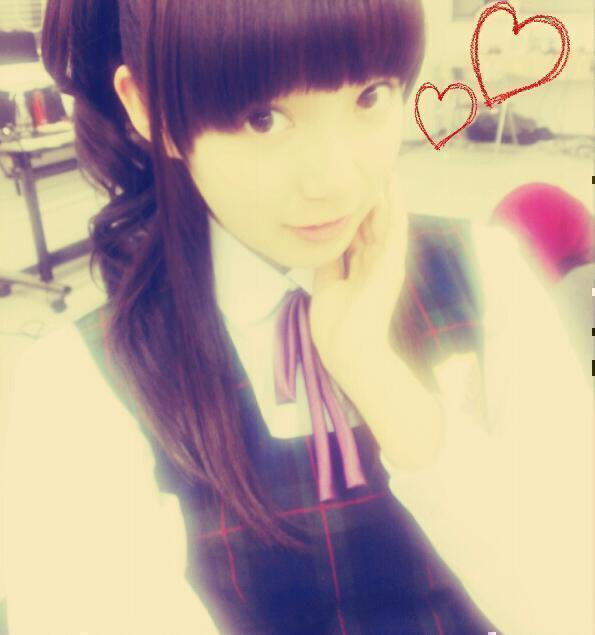
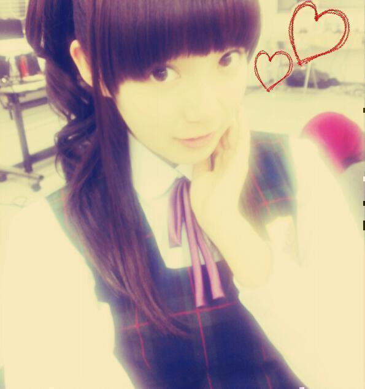

| 2012/12 03 Mon | ひめたん大図鑑38 |
テスト期間中ではありますがー、
ちょっとだけ
昨日参加した収録のお話( ω )いえあ
昨日は乃木どこの収録に
参加してきましたとさ＼(^^)／
なんかねーほんまにほんまに
すきな企画だった！
今はここまでしか言えないけど
オンエアぜひ見てほすい(*>ω<*)
ずっと
みなさんの前でやりたかったこと
お腹いっぱいやってきたーよ＊
ぽんぽこりんー♪
あーそうそうそれでね
美容院行ったて話したじゃんよ
だからお写真貼りますよー(｀・ω・´)
えっとちなみにね
ま写真だと写りが多少違っちゃうけど
とにかく髪色がお上品になって
前髪がちょっと増えて
うしろちょっと短くなった！
解禁ーっ＼(^^)／どきどき

ちょっとだけ
昨日参加した収録のお話( ω )いえあ
昨日は乃木どこの収録に
参加してきましたとさ＼(^^)／
なんかねーほんまにほんまに
すきな企画だった！
今はここまでしか言えないけど
オンエアぜひ見てほすい(*>ω<*)
ずっと
みなさんの前でやりたかったこと
お腹いっぱいやってきたーよ＊
ぽんぽこりんー♪
あーそうそうそれでね
美容院行ったて話したじゃんよ
だからお写真貼りますよー(｀・ω・´)
えっとちなみにね
ま写真だと写りが多少違っちゃうけど
とにかく髪色がお上品になって
前髪がちょっと増えて
うしろちょっと短くなった！
解禁ーっ＼(^^)／どきどき

ひめたん大図鑑とは何か。
それは、ひめたんが受験とかテストとかテストとかテストでちょーっと日記書く時間がないぞーって時に登場する、
いわゆる「過去の質問返しをまとめたもの」って感じかな。
過去なので時制とかおかしなことになる質問も中にはあるかもだけど、
ま、そゆことなんでね(*^^*)
798
 ひめたんのブログ毎日見てます!!ブログ書いたら毎日コメントしていいですか??
ひめたんのブログ毎日見てます!!ブログ書いたら毎日コメントしていいですか??
嬉しいーっ(o>ω<o)!!
ぜひぜひ☆いつもありがとうですっ。
799
朝はご飯派パン派?
800
ひめたんは朝ごはんはパン派?ご飯派?どっちなん?
パン派かなあ。ひめたんパン好きなの∩^ω^∩
でも、のりたまがかかった白ごはんは朝にピッタリよね!
ひめたんのりたま大好きなのっ♪♪
801
放送部で何かの大会とか出たことある?(^з^)-☆
中文連とか、NHK杯全国放送コンテストとか!
全国大会は番組部門で素晴らしい成績をいただきましたのよっ(*^^*)
個人は...触れないでおくのが正しいかと。うん!
802
ひめたんにとっての3月とはどんな月かなぁ?
北野きいさんの「サクラサク」って曲があるのですが、ご存知ですか(ω)?
あれがぴったりな月だと思う♪♪
803
全然いいよー無理に質問回答せんとも!!
804
代わりの新コーナーがあれば尚いいんだけど...
いやいや無理にやってないよー(\'・ω・`)
ひめたんの楽しみでもあるし、いっちゃん初期の頃からやってることだから
これからも続けていきます!
805
ひめかって呼んだらあかん(´・ω・`)?
きました少数派!
ろってぃー(川村真洋chan)べびまり(伊藤万理華chan)とかは
「ひめかー!」て読んでくれますよ∩^ω^∩☆
でもたしかに、握手会とか行ったときに
「ひめたんって呼ぶの恥ずかしいから、ひめかって呼ぶわあ。」って方いますね。
え?恥ずかしいー('・ω・`)??
806
ひめたんの事、ひめぽんって、呼んで良いかな?
PVの名残かしら。
呼んで呼んでー(^^)!
807
私みたいな子とは友達になってくれる?←え
もちろん喜んでっ♪
そんなふうに好意を持ってくれる子、大好きよ(o>ω<o)!
808
愛媛のゆるキャラ知ってます?
存じ上げないです(>_<)
教えて下さいー!!
809
ワカメスープと卵スープとワンタンスープなら、どれが好きですか?(笑)
んんん玉子スープかな(*^^*)
玉子スープの可愛い味が好きなの。
可愛い味...。伝わるかな...。
810
ひめたんってやってみたい髪型とかある??
今はハーフアップのちょいくるくる好きですよ!
811
ひめたんは休日は何してるん?
お散歩するの好きですよ!
おうちの周りもだけど、ちょっと遠出するくらいが好き(^^)
812
ファンレター送ったら読んでくれる??でも、どんなこと書けばいいのかなぁ??
もちろん読む!めっちゃ読みますよー!
何だろね。ひめたんがお友達にお手紙書くときは
昨日の夜はハンバーグ食べたのーとか
今テレビでめっちゃ可愛い仔犬が遠吠えしてるのーとか
そんなノリです(*・・*)
いやこれ本気!
813
こんな人みたいに(有名人)orこんなことをしたいっていう考えはある?
何だろう。
乃木坂入る前はアナウンサーさんとかなりたかったんですよね。
マルチにいろんなことしてみたいです!
今はふわっとしてる←
814
年上は好きですか??w
好きって言ってほしいー(//ω//)??
うん好きですよ♪
お兄さんみたいな人が好き!
815
ひめたんは調味料では何が好き?
オタフクソース!
何でも合うからね。たちまちオタフクソース常備だよね。
みなさんもぜひ!
816
寝ないといけないのに寝れない。...そんなことありますかぁ?
ありますよ(;'∩`)
生活リズムが狂ってると、昼間はやたら眠たいし
夜は寝れないんですよね。
明日撮影なのにーみたいな。
817
ひめたんが好きな遊園地の乗り物ってなにかな?
観覧車!
帰るちょっと前に観覧車のらなきゃね(^^)
818
ひめたんの好きな色は何カナ??
♪もーもーいーろー!
はいももいろですピンクです(*^^*)
819
ぴんく以外に好きな色あるっ?
ぱすてるからー好き!
クリームいろとかも好きですよ(ω)
(＊´・ω・＊)ひめたん
コメント(111)
2012/12/03 21:54